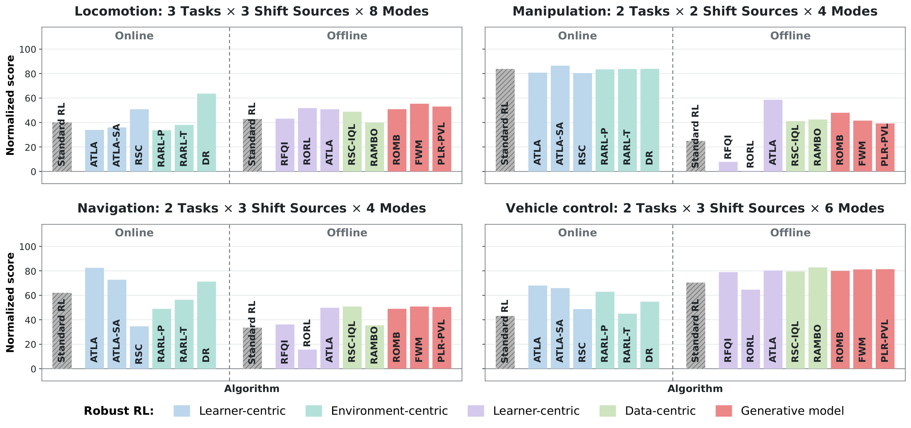
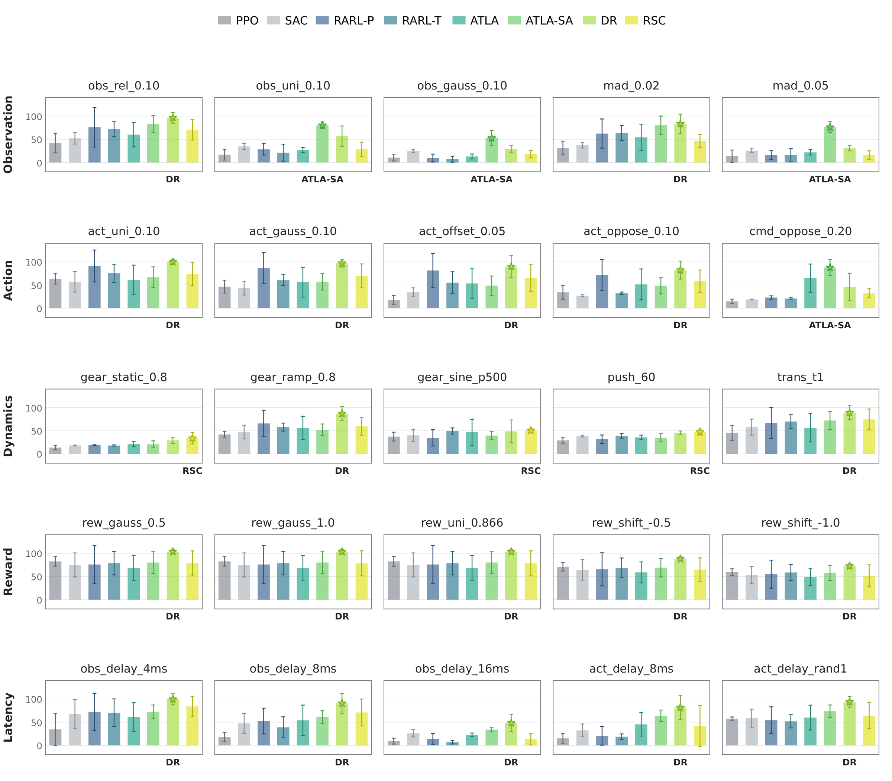
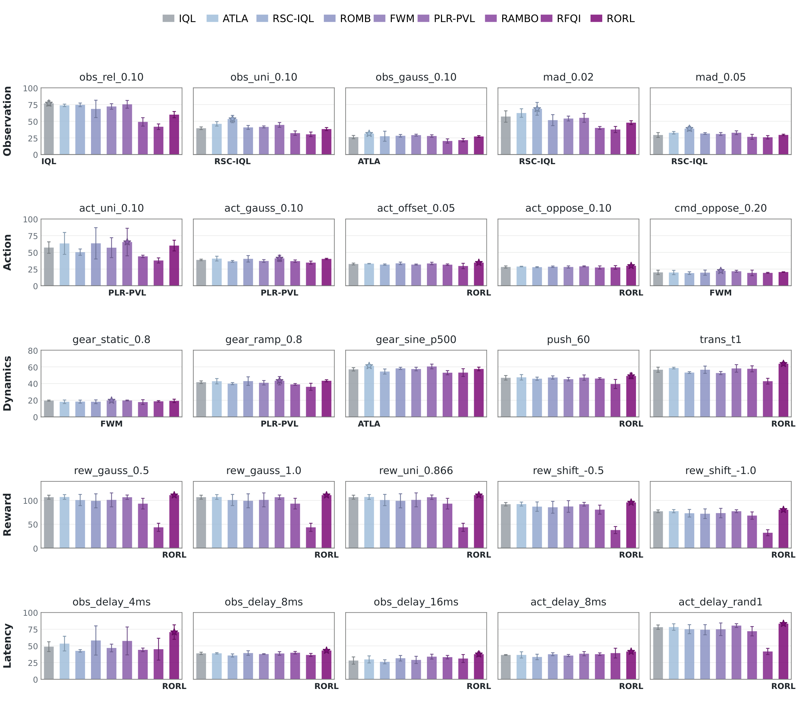

More of the unified comparison: overview · isolated and compound shifts
Every method on every configuration of the unified comparison: the library-wide grid, the isolated shifts per condition, and the compound shifts.



More of the unified comparison: overview · isolated and compound shifts